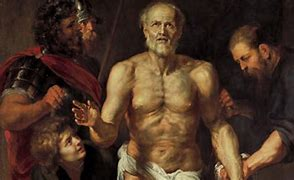
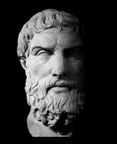
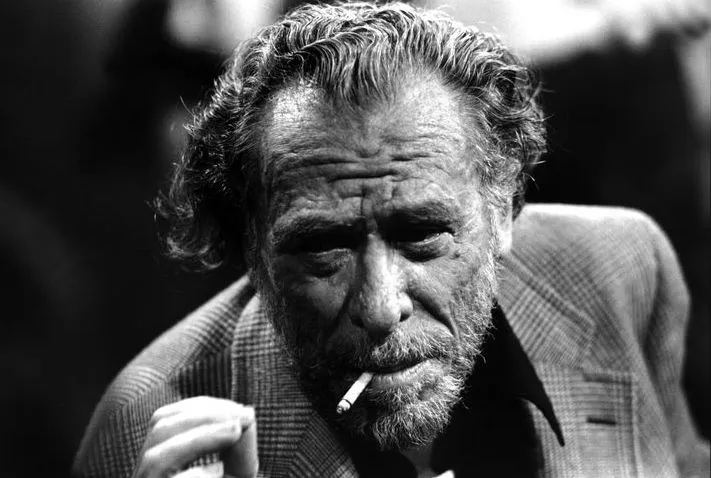
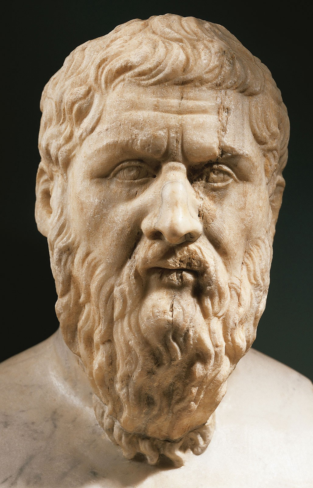
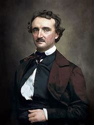
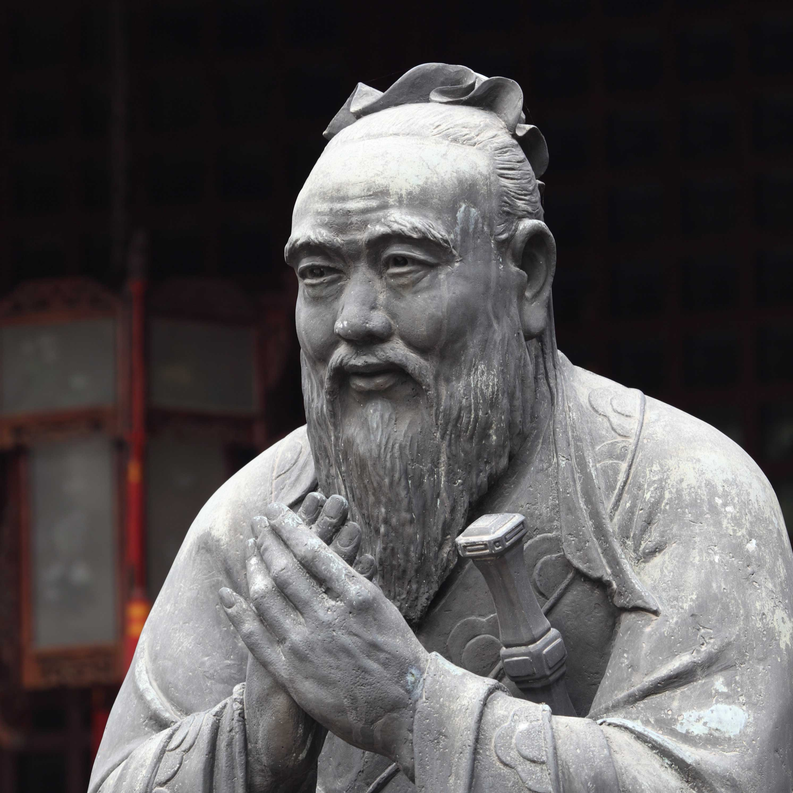
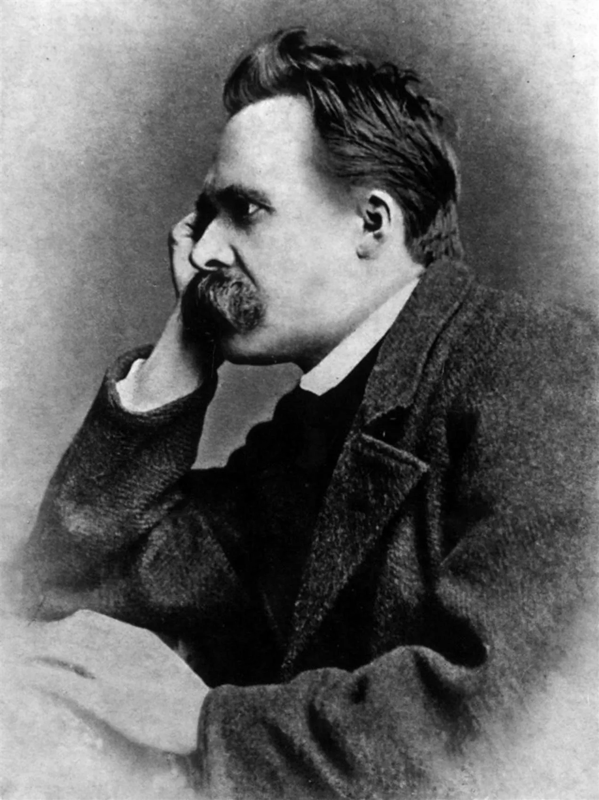

Featured Authors
Seneca
Seneca was a Roman philosopher and statesman. He was Rome's leading intellectual figure in the mid-1st century CE. Seneca fell out of favor to the Roman Emperor at the time and was ordered to death by suicide. Sadly, his best writings and techings came right before this time.

Epicetus
Epictetus was a Greek Stoic philosopher. He was born into slavery and becoame a renound philsopher. His teachings were written down and published by his pupil Arrian in his Discourses and Enchiridion. He lived in Rome until his banishment, he then went to Nicopolis in northwestern Greece for the rest of his life.

Charles Bukowski
Charles Bukowski (1920-1994), was an American author known for his use of violent images and graphic language in poetry and writings that portray survival in a corrupt society.

Plato
Plato was a philosopher during the 5th century BCE. He was a student of Socrates and later taught Aristotle. He founded an academic program which many consider to be the first Western university. Plato wrote many philosophical texts and dedicated his life to learning and teaching. He is hailed as one of the founders of Western philosophy.

Edgar Allan Poe
Edgar Allan Poe was born on January 19, 1809 in Boston, Massachusetts and died on October 7, 1849 in Baltimore, Maryland. He was an American writer most known for his short stories and poems. He is famous fro the reoccuring theme of death and despondant thoughts anf writings.

Marcus Aurelius
Marcus Aurelius, born April 26, 121 CE, Rome and died March 17, 180, Vindobona, was a Roman emperor, best known for his writing in "Meditations" on Stoic philosophy. "Meditations" is still one of the most sold philosophy books and one of the most commonyl used.

Confucius
Confucius (551 - 479 BCE), was a thinker, political figure, educator and founder of the Ru School of Chinese thought. Confucius is known as the first teacher in China who wanted to make education broadly available and who was instrumental in establishing the art of teaching as a vocation. He also established ethical, moral, and social standards that formed the basis of a way of life known as Confucianism.

Friedrich Neitzche
Friedrich Nietzsche was born October 15, 1844, in Röcken, Saxony, Prussia (now modern day Germany) and died on August 25, 1900, Weimar, Thuringian States. He was a German scholar and philosopher who became one of the most influential of all modern thinkers. Unfortunatly, his mental state declined in his final years and suffered from illnesses until his death.

Franklin D. Roosevelt
Franklin D Roosevelt was the 32nd President of the United States. He was the only president elected four times. He was most famous for serving during the Great depression and World War II.